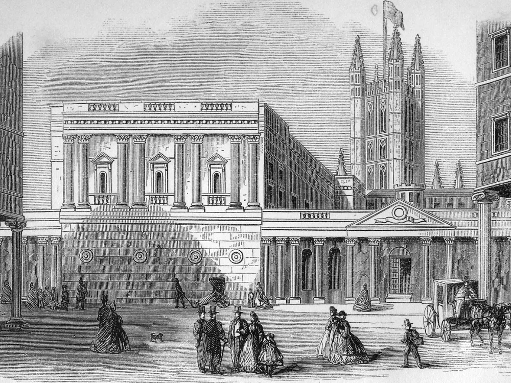

Identifying and analyzing different Gothic tropes and elements
expressed in the novel
By Miguel Gasper
Northanger Abbey is a novel written by Jane Austen in the last few years of the 18th century. The
book
was written as a satire of Gothic literature, in that there are some Gothic story elements that are
flipped or used as plot points to further satirize Gothic literature.
In the beginning of the book, we are introduced to the protagonist and heroine Catherine. Catherine
lives with her mother, father, and siblings. Catherine was not like other girls, in that she
preferred
athletic activities and educated herself using Gothic novels. At the age of 17, she was invited by
her
neighbors, Mr and Mrs Allen, to Bath, England.
Some important notes about the introduction are Catherine’s characteristics. In typical
Gothic literature, the heroine is described as very beautiful and in love with the
mysterious hero. However, Catherine is described as average in appearance. Also, she
shows no love interests to any of the boys in her hometown.
It is at Bath where we meet the first antagonist, John Thorpe, along with his sister, Isabella
Thorpe. John is an antagonist because he attempts to ruin Catherine’s relationship with another
character, Henry Tilney. While John is brash and very informal, Henry is very conversational and
gentle. Henry’s sister, Eleanor, is also a foil of Isabella. Isabella is overly dramatic and aids
John in completing his plans, while Eleanor is calm and thoughtful. After spending several weeks in
Bath, Catherine leaves with Henry, Eleanor, and their father, General Tilney, to Northanger Abbey.

Some important notes include the introduction of John Thorpe as a villainous male. In
Gothic literature, there is usually always a villainous male that seeks to accomplish
some task. In this case, John’s task would be to marry Catherine. Unfortunately, he
fails, and instead tries to sabotage Catherine’s relationship with Henry and General
Tilney.
Once at the Abbey, Catherine’s mind begins racing with wild Gothic ideas. Due to this, she begins
thinking that she is in a Gothic story, given the gothic setting. It is this thought that leads her
to believe that General Tilney murdered his own wife. However, this is proven false by Henry Tilney,
who then begins questioning Catherine's ideas and mentality. After ten days, General Tilney suddenly
kicks Catherine out of the Abbey for no given reason.
More important notes in this section include Catherine’s naivety of believing herself to
be in a Gothic story just because she is in a Gothic setting.As discussed earlier,
Catherine educated herself through several Gothic novels, so her mindset would be
centered around Gothic tropes and elements. Thus, it would be easy for her to see a
Gothic setting as being the setup for a Gothic story, since a Gothic setting is what
makes a Gothic story truly Gothic.
The last Gothic element shown in the story is a happy ending.
What is the central idea that Northanger Abbey explores?
By Thomas Nguyen
Catherine Morland’s character development directly communicates the novel’s themes of love and
loyalty through her shifting perceptions and relationships. Austen doesn’t deliver these themes
through grand declarations but through Catherine’s subtle, often awkward growth, which strengthens
the message.
Initially, Catherine’s view of love is distorted by her obsession with Gothic novels. Her delusions
regarding the general in chapters 20 through 23 prove this. In chapter 20, after Catherine asks for
confirmation for what an Abbey is, Henry responds with, “‘No, certainly. We shall not have to
explore our way into a hall dimly lighted by the expiring embers of a wood fire—nor be obliged to
spread our beds on the floor of a room without windows, doors, or furniture. But you must be aware
that when a young lady is (by whatever means) introduced into a dwelling of this kind, she is always
lodged apart from the rest of the family. While they snugly repair to their own end of the house,
she is formally conducted by Dorothy, the ancient housekeeper, up a different staircase and along
many gloomy passages, into an apartment never used since some cousin or kin died in it about twenty
years before. Can you stand such a ceremony as this? Will not your mind misgive you when you find
yourself in this gloomy chamber—too lofty and extensive for you, with only the feeble rays of a
single lamp to take in its size—its walls hung with tapestry exhibiting figures as large as life,
and the bed, of dark green stuff or purple velvet, presenting even a funeral appearance? Will not
your heart sink within you?’”
This tease by Henry Tilney causes Catherine’s imagination to go wild in chapter 21 where she
believes that the Abbey holds some deep secret locked within a chest, and in chapter 23, where she
believes the general killed his wife, “Mrs. Tilney yet lived, shut up for causes unknown, and
receiving from the pitiless hands of her husband a nightly supply of coarse food, was the conclusion
which necessarily followed.” This wild imagination can imply she also views relationships the same
way. She expects relationships to mirror fiction’s dramatic beats, misreading Henry Tilney’s
sarcastic humor as mysterious charm and later imagining General Tilney as a villain. These mistakes
aren’t just comic; they reveal a deeper problem, which is that she’s loyal to fantasies, but not
people. Her growth begins when reality interrupts—Henry calls out her absurd accusation against his
father not with anger, but baffled amusement. This moment underscores Austen’s point: real love
requires seeing others clearly, not projecting ideals onto them.
Loyalty, too, is tested through contrast. Isabella Thorpe acts as Catherine’s foil, performing
friendship while manipulating everyone for personal gain. When Isabella drops Catherine’s brother
for a wealthier man, the betrayal highlights Catherine’s quiet integrity. After Catherine reads the
letter sent to her by Isabella in chapter 27, “Such a strain of shallow artifice could not impose
even upon Catherine. Its inconsistencies, contradictions, and falsehood struck her from the very
first. She was ashamed of Isabella, and ashamed of having ever loved her,” implies that she had
integrity and was honest. Would you be this ashamed of others if you have the qualities you view as
scornful? Even when General Tilney kicks her out for lacking fortune, Catherine doesn’t fight back.
Austen’s message is clear: true loyalty means consistency, not convenience.
The social context sharpens these themes. In a world where marriage is transactional, embodied by
John Thorpe’s boasting, evident in chapter nine, where he boasts about his horse, “‘You will not be
frightened, Miss Morland,’ said Thorpe, as he handed her in, “if my horse should dance about a
little at first setting off. He will, most likely, give a plunge or two and perhaps take the rest
for a minute, but he will soon know his master. He is full of spirits, playful as can be, but there
is no vice in him,”” and General Tilney’s greed, which is shown by the general kicking Catherine out
of the Abbey because she wasn’t rich. This is implied by the last lines in the book, “an accession
of dignity that threw him into a fit of good humour,” which made him accept the marriage between
Henry Tilney, and Catherine. Henry and Catherine’s bond stands out because it’s built on mutual
respect. Henry doesn’t love her despite her naivety but helps her move beyond it. Their relationship
argues that love isn’t about grand gestures but daily honesty, a radical idea in a status-obsessed
society.
Catherine’s arc concludes not with perfection but perspective. She stops seeing life as a Gothic
novel and starts valuing people as they are. The themes resonate because Catherine’s mistakes are
relatable and her progress gradual. Love and loyalty, the novel insists, aren’t about dramatic
sacrifices but the choices we make when no one’s watching.
How big of an effect does the historical setting with its strict
social rules and etiquette have on the development of the characters and plot?
By Thomas Nguyen
The story of Northanger Abbey takes place during the Regency era, a time when strict social rules
and etiquette influenced every aspect of daily life. This period not only affected how characters
spoke and behaved but also had a significant impact on the plot and the development of the
characters. These etiquette rules don’t just affect the way people talk to each other, but are a
reflection of the status-based society in the Regency era, and leave a deep impact on the character
development of Catherine Morland.
We are introduced to Catherine Morland as a young average woman, not stunning in appearance, nor in
behavior. But as she grew older, when Catherine reached her teens, she started to care about her
looks, and grew into a, “quite a good-looking girl” as said by her parents. She goes to Bath, a big
change of setting from home, and meets Mrs. Allen, who is always concerned with her own appearances.
This behavior can indirectly communicate the values of outward appearance in the Regency era to
Catherine who has not really cared about appearances much in her life.
At a ball, a lady had to wait for a gentleman to ask her to dance with him, but the lady had to have
some acquaintance with that gentleman, otherwise, the gentleman needed someone, like a Master of
Ceremonies, to introduce him to her. This is shown in chapter three, “The master of the ceremonies
introduced to her a very gentleman-like young man as a partner; his name was Tilney,” where Henry
Tilney was introduced by the Master of Ceremonies before asking Catherine to dance with him. This
can introduce to Catherine Morland more of the importance of outward appearance in the Regency
era.
Another major aspect of Regency etiquette is how women are expected to maintain their reputations by
following strict rules. Catherine, like other young women, is not allowed to go out on her own, and
her actions are under constant scrutiny. Isabella Thorpe, however, pushes these boundaries,
manipulating the rules to her advantage, “The progress of the friendship between Catherine and
Isabella was quick as its beginning had been warm, and they passed so rapidly through every
gradation of increasing tenderness that there was shortly no fresh proof of it to be given to their
friends or themselves,” the speed at which the friendship developed can imply that Isabella could’ve
bent some rules and manipulated Catherine to speed up the friendship. John Thorpe takes advantage of
this by lying about Catherine’s plans, “‘Well, I saw him at that moment turn up the Lansdown Road,
driving a smart-looking girl,’” making it seem like she agreed to something she did not. Because of
the rigid social rules, Catherine cannot openly contradict him without causing a scene. This shows
how these rules not only dictate behavior but also give certain people the power to control
others.
Marriage, in this period, is similarly influenced by social expectations. It is less about love and
more about status. General Tilney, for example, thought Catherine was wealthy and encouraged her
relationship with Henry through John Thorpe, “John Thorpe had first misled him.” When he finds out
that she is not rich, he promptly distances himself from her. His reaction reinforces the idea that
marriage during the Regency era was often treated as a financial transaction, not a personal choice.
Catherine, however, rejects this idea. She values genuine affection over wealth, and her eventual
marriage to Henry underscores Austen’s critique of a society that prioritizes money over true
connection.
Regency etiquette also complicates honest communication. Since people are expected to be polite
rather than direct, emotions and intentions are often concealed under a veil of proper conversation.
Catherine, for instance, misinterprets Isabella’s dramatic expressions of friendship, thinking they
are sincere. She also lets her imagination run wild when she suspects that Northanger Abbey hides
dark secrets, but the real deception is in the everyday social performances, where words and actions
do not always align. Through these experiences, Catherine learns that appearances can be
deceiving.
The rigid social rules of the Regency era shape Catherine’s entire journey. They determine how she
interacts with others, how she interprets the world, and how she matures over the course of the
story. Northanger Abbey is not just a parody of Gothic novels; it’s a story about navigating a
society where etiquette governs everything, often at the expense of the truth.
The Power of Appeals in Jane Austen’s Northanger Abbey
By Ahmad Sadid Wafiq
Jane Austen employs various rhetorical appeals—humor, irony, sentimentality, and moral critique—to
enhance the emotional depth of Northanger Abbey. Through her skillful use of pathos (emotional
appeal), ethos (moral credibility), and logos (logic and satire), she both engages readers and
critiques societal expectations, particularly through the journey of her protagonist, Catherine
Morland.
One of Austen’s most effective tools is humor, particularly satire, which she uses to parody gothic
novels. Catherine’s overactive imagination, influenced by her love of The Mysteries of Udolpho,
leads her to suspect General Tilney of imprisoning and possibly murdering his wife. Her dramatic
investigation of the late Mrs. Tilney’s supposed confinement is both comical and revealing,
showcasing how gothic literature distorts her perception of reality. Austen uses this exaggeration
not only to entertain but also to contrast Catherine’s imagination with the mundane truth—that Mrs.
Tilney simply died of illness. This clever irony underscores Austen’s broader critique of
sensationalist fiction and appeals to logic, urging readers to recognize the distinction between
fantasy and reality.
Catherine’s emotional journey also provides a strong appeal to pathos. Her trusting nature makes her
susceptible to the manipulations of Isabella Thorpe, whose cunning and self-interest become evident
through her flirtation with Captain Tilney despite her engagement to Catherine’s brother, James. The
revelation of Isabella’s duplicity is a turning point for Catherine, marking her transition from an
impressionable girl to a more discerning young woman. This emotional betrayal, coupled with
Catherine’s quiet heartbreak over Henry Tilney’s potential disapproval, elicits deep sympathy from
readers and reinforces the novel’s theme of maturation and self-awareness. Her evolution from
naivety to discernment is not just a plot device but a testament to Austen’s nuanced
characterization.
Additionally, Austen employs ethos to critique societal norms, particularly concerning marriage and
social ambition. General Tilney’s initial hospitality towards Catherine is not based on genuine
kindness but on his mistaken belief that she is an heiress. When he discovers her lack of fortune,
he unceremoniously expels her from Northanger Abbey, an act of calculated cruelty that reveals his
materialistic nature. This harsh treatment highlights the rigid class structures of Austen’s era and
exposes the moral bankruptcy of those who prioritize wealth over personal virtue. Meanwhile, Henry
Tilney’s choice to defy his father and propose to Catherine despite her modest means underscores the
novel’s ethical argument: true character and affection should triumph over financial
considerations.
Finally, Austen plays with suspense and gothic elements to momentarily engage readers in feelings of
fear and intrigue, only to subvert their expectations. Catherine’s midnight excursions through
Northanger Abbey’s dimly lit corridors and her discovery of a mysterious chest build tension
reminiscent of The Castle of Otranto, yet the only shocking revelation inside the chest is an old
laundry list. This deliberate anticlimax humorously dismantles gothic tropes,